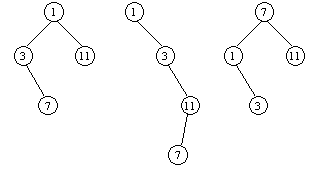
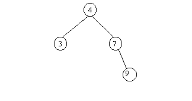

Пете Булочкину крупно повезло: он, наконец, устроился на работу в фирму "Macrohard". Он хочет показать себя с самой лучшей стороны, поэтому к первому своему заданию отнесся весьма ответственно. Задание состоит в том, чтобы написать поисковую систему. Пете заранее известен набор чисел A1, A2, …, Ak ( 1<=k<=300, 1<=Ai<=10000000 , все Ai - различные целые числа) - назовем их ключами. Система должна обрабатывать запросы типа: "Содержится ли среди ключей число s?". Известно, что число s может быть любым целым числом от 1 до n (1<=n<=10000000). Руководство фирмы сказало Пете, что ему нужно использовать как можно меньше памяти. Поразмыслив, Петя решил, что оптимальным решением поставленной задачи будет использование двоичных деревьев поиска, описание которых приведено ниже.
Двоичное дерево может быть пустым, или состоять из вершины, к которой присоединены два двоичных дерева, то есть левое и правое поддерево (в этом случае вершину, к которой присоединяются деревья, называют корнем). Если в каждую вершину поместить по ключу, причем так, чтобы в разных вершинах были различные ключи, то получим двоичное дерево для заданного набора ключей. Будем говорить, что дерево является двоичным деревом поиска, если левое и правое поддеревья являются двоичными деревьями поиска, а также любой ключ из левого поддерева, выходящего из корня, меньше ключа, записанного в корне, а любой ключ из правого поддерева - больше.
На рис. 1 показаны различные двоичные деревья для набора ключей 1, 3, 7, 11, из них деревья б) и в) - двоичные деревья поиска. Корни деревьев изображены сверху. Корни деревьев а) и б) - вершина с ключом 1, корень дерева в) - вершина с ключом 7.

Рис. 1
Для того, чтобы проверить, содержится ли в заданном двоичном дереве поиска ключ s, используется следующий алгоритм:
0) Положить текущую вершину равной корню дерева.
1) Проверить, совпадает ли s с ключом, записанным в текущей вершине. Если да, то ключ s найден. Иначе перейти к шагу 2.
2) Если s меньше ключа, записанного в текущей вершине, то положить текущую вершину равной корню левого поддерева, иначе - равной корню правого поддерева (если соответствующие поддеревья отсутствуют, то алгоритм заканчивает работу, выдавая, что ключ s в дереве отсутствует). Перейти к шагу 1.
Стоимостью поиска ключа s назовем количество выполненных шагов 1) вышеописанного алгоритма. Например, для дерева на рис. 1в) стоимости поиска различных ключей указаны в таблице:
| Ключ | 1 | 2 | 3 | 4 | 5 | 6 | 7 | 8 | 9 | 10 | 11 |
|---|---|---|---|---|---|---|---|---|---|---|---|
| Стоимость поиска | 2 | 3 | 3 | 3 | 3 | 3 | 1 | 2 | 2 | 2 | 2 |
Стоимостью заданного двоичного дерева для диапазона поиска от 1 до n назовем сумму стоимостей поиска каждого из ключей от 1 до n в этом дереве. Например, стоимость дерева на рис. 1в) для диапазона поиска от 1 до 11 равна 26.
Петя хочет построить для своей поисковой системы двоичное
дерево поиска минимальной стоимости.
По введенным числам n, k, A1, …, Ak определить минимальную стоимость C
двоичного дерева поиска для набора ключей A1, A2, …, Ak и диапазона поиска от 1
до n.
Входные данные состоят из k+2 строк: 1-я строка содержит число n, 2-я строка - число k, строки с 3-й по (k+2)-ю - числа A1, .., Ak по одному в строке.
Выходной файл должен содержать единственное число C.
| $input$ | $output$ |
|---|---|
10 4 9 3 7 4 | 22 |
Оптимальным деревом для заданного примера будет следующее:
